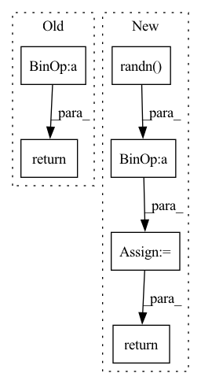

Pattern ID :20580

Before Change
dx = self.l_relu(self.linear1(dx))
dx = self.linear2(dx)
return x_pos + dx
class NormalNet(nn.Module):
def __init__(self, device):
After Change
def forward(self, data):
z1, x_pos, edge_index = data.z1.to(self.device), data.x_pos.to(self.device), data.edge_index.to(self.device)
n1 = torch.randn(x_pos.shape[0], x_pos.shape[1]).to(self.device) * 1e-5
dx = self.l_relu(self.bn1(self.conv1(z1, edge_index)))
dx = self.l_relu(self.bn2(self.conv2(dx, edge_index)))
dx = self.l_relu(self.bn3(self.conv3(dx, edge_index)))
dx = self.l_relu(self.bn4(self.conv4(dx, edge_index)))
dx = self.l_relu(self.bn5(self.conv5(dx, edge_index)))
dx = self.l_relu(self.bn6(self.conv6(dx, edge_index)))
dx = self.l_relu(self.bn7(self.conv7(dx, edge_index)))
dx = self.l_relu(self.bn8(self.conv8(dx, edge_index)))
dx = self.l_relu(self.bn9(self.conv9(dx, edge_index)))
dx = self.l_relu(self.bn10(self.conv10(dx, edge_index)))
dx = self.l_relu(self.bn11(self.conv11(dx, edge_index)))
dx = self.l_relu(self.bn12(self.conv12(dx, edge_index)))
dx = self.l_relu(self.linear1(dx))
dx = self.linear2(dx)
return x_pos + n1 + dx
class NormalNet(nn.Module):
def __init__(self, device):
In pattern: SUPERPATTERN
Frequency: 3
Non-data size: 6
Instances
Fragment ID: 66387013
Project Name: astaka-pe/dual-dmp
Commit Name: 00d263b6537e68750d84971a1c4923b7647cafac
Time: 2021-08-20
Author: astaka1119@g.ecc.u-tokyo.ac.jp
File Name: util/networks.py
M Class Name: PosNet
N Class Name: PosNet
M Method Name: forward(2)
N Method Name: forward(2)
M Parent Class: nn.Module
N Parent Class: nn.Module
M File Name: util/networks.py
N File Name: util/networks.py
M Start Line: 65
M End Line: 67
N Start Line: 50
N End Line: 67
'>
Before Change
return predictions
def masked_mse_loss(self, input, target, mask, background_mask):
return (background_mask * (mask * (input - target) ** 2)).mean()
def general_step(self, batch, batch_idx, mode):
After Change
def masked_mse_loss(self, input, target, mask, background_mask):
//return (background_mask * (input - target) ** 2).mean()
input = torch.randn(2, 100, 3)
target = torch.randn(2, 100, 3)
mask = (input > 0).float()
background_mask = torch.randn(2, 100, 1)
value = background_mask * (input - target) ** 2
mask_sum = torch.sum(mask, dim=1)
mask_sum_modified = torch.clamp(mask_sum, min=1.0)
loss = torch.sum(value * mask) / mask_sum_modified
return loss
// TODO -> do not take into account -1 flow information (or filter them in WaymoDataset?)
def compute_metrics(self, y, y_hat, mask, labels, background_weight):
'>
Fragment ID: 66387024
Project Name: jabb0/fastflow3d
Commit Name: bea207737f9d35e204c73ecfcde3de582a10956d
Time: 2021-06-28
Author: carlosmn1997@gmail.com
File Name: models/FastFlow3DModelScatter.py
M Class Name: FastFlow3DModelScatter
N Class Name: FastFlow3DModelScatter
M Method Name: masked_mse_loss(5)
N Method Name: masked_mse_loss(5)
M Parent Class: pl.LightningModule
N Parent Class: pl.LightningModule
M File Name: models/FastFlow3DModelScatter.py
N File Name: models/FastFlow3DModelScatter.py
M Start Line: 118
M End Line: 118
N Start Line: 120
N End Line: 128
'>
Before Change
keypoints_list.append(keypoints)
keypoints = torch.cat(keypoints_list, dim=0) // (B, M, 3)
return keypoints
def forward(self, batch_dict):
After Change
// src_points = src_points[mask]
// batch_indices = batch_indices[mask]
// sample points
keypoints_batch = torch.randn((batch_size, self.model_cfg["num_keypoints"], 4), device=src_points.device)
keypoints_batch[..., 0] = keypoints_batch[..., 0] * 140
keypoints_batch[..., 1] = keypoints_batch[..., 0] * 40
keypoints_batch[..., 2] = 10.0 // points with height flag 10 are padding/invalid, for later filtering
for bs_idx in range(batch_size):
bs_mask = (batch_indices == bs_idx)
sampled_points = src_points[bs_mask].unsqueeze(dim=0) // (1, N, 3)
// sample points with FPS
// some cropped pcd may have very few points, select various number of points to ensure similar sample density
num_kpts = int(self.model_cfg["num_keypoints"] * sampled_points.shape[1] / 50000) + 1 // 50000 is approximately the number of points in one full pcd
num_kpts = min(num_kpts, self.model_cfg["num_keypoints"])
cur_pt_idxs = pointnet2_stack_utils.furthest_point_sample(
sampled_points[:, :, 0:3].contiguous(), num_kpts
).long()
if sampled_points.shape[1] < num_kpts:
empty_num = num_kpts - sampled_points.shape[1]
cur_pt_idxs[0, -empty_num:] = cur_pt_idxs[0, :empty_num]
keypoints = sampled_points[0][cur_pt_idxs[0]].unsqueeze(dim=0)
keypoints_batch[bs_idx, :len(keypoints[0]), :] = keypoints
// keypoints = torch.cat(keypoints_list, dim=0) // (B, M, 3)
return keypoints_batch
def forward(self, batch_dict):
'>
Fragment ID: 66386994
Project Name: derrickxunu/opencood
Commit Name: c7ecf237666697c93ad84b5d271c16e133ac8ccb
Time: 2022-04-01
Author: yunshuang.yuan@ikg.uni-hannover.de
File Name: opencood/models/sub_modules/vsa.py
M Class Name: VoxelSetAbstraction
N Class Name: VoxelSetAbstraction
M Method Name: get_sampled_points(2)
N Method Name: get_sampled_points(2)
M Parent Class: nn.Module
N Parent Class: nn.Module
M File Name: opencood/models/sub_modules/vsa.py
N File Name: opencood/models/sub_modules/vsa.py
M Start Line: 143
M End Line: 161
N Start Line: 124
N End Line: 167